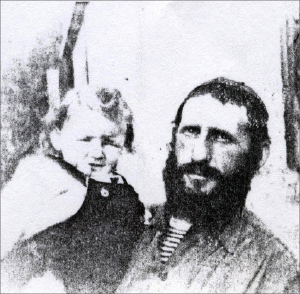

R’ Berish
R’ Berish was the image of a Chassid and a man of warmth, good to heaven and good to his fellow. While he himself was particular about his learning and his conduct to an extreme, he treated others with openness and great warmth and had a smile for everyone. * About the Chassid, R’ Dov Berish Rosenberg a”h who was a model of a Chassid. * 2 nd and final chapter.

After the Rosenberg family arrived in Eretz Yisroel they lived briefly in an immigrant camp in Pardes Chana. They then moved to Lud near the train station where Lubavitcher Chassidim formed the first Chabad k’hilla in the city.
The financial situation at the time was unbearable. The place where their home was located was not connected to electricity or water. There was no decent work to be had. At first R’ Berish worked cleaning the streets of Lud, but was fired after two weeks. Then he found even harder work, loading and unloading cinder blocks. This was hard labor which caused him to become sick and he was forced to quit.
There was no money in the house for food so the family picked oranges and sabras (prickly pears) that grew in the neighborhood. As time passed, the neighborhood filled up and there was plenty of work in his mother-in-law’s grocery store. They decided they needed to distribute milk to the houses. R’ Berish took this job. This was very hard work. Every day he loaded three canisters onto a wagon, each one containing thirty liters of milk. He would then have to drag the wagon with the heavy canisters of milk from house to house. He worked at this job for five years until the birth of his daughter, Nechama.
On the day she was born he got a job at the central post office of Lud. The house was connected to the electric grid and the Rosenberg family’s mazal began to shine.
As the years went by he was promoted at work until he became the manager of the Lud branch. His fellow employees admired and loved him. He worked there for thirty years until he reached retirement age.
SPREADING THE WELLSPRINGS AT THE POST OFFICE
Work to R’ Berish was solely in order to support his family. He never thought about how to make more money. He did not waste his time. When he sat at the service window to serve the customers he used every free moment to learn.
One day, a resident of another city who did not know him walked into his branch. He saw the sign “Post Office” and walked in. When he saw R’ Berish immersed in his learning he walked out. R’ Berish called out to him, “What do you need?” The man replied, “I thought it’s a synagogue here, while I am looking for a post office.”
He was particular about tznius and protecting his eyes from forbidden sights. Every day he went to work by bicycle with his head down so as not to see undesirable sights. All the employees knew that when he received money from a woman he put a handkerchief on his hand.
During work hours he learned and was mekarev others to Judaism as Ovadia Sigman, one of the postal employees, related:
“I worked with him for many years. He was a tzaddik and humble. When he received his salary he never looked at the pay stub. I was born in Iraq where there was no Jewish school. When I came here I knew nothing about Judaism. I did not even know about lighting Chanuka lights. Thanks to him I began putting t’fillin on every morning. Every day he would come to check my hands to see if they had t’fillin marks and he did this with a smile and a lot of heartfelt warmth.”
Pinchas Cohen, also a postal employee, said that he and his family became baalei t’shuva thanks to R’ Berish. Thanks to him, all the postal employees wore kippot and put t’fillin on every day. There was a pair of t’fillin which he brought to the branch, and every day the employees would use them.
When the Rebbe announced the Torah scroll for Jewish children, he registered the children of the postal workers for a letter. He arranged minyanim and on Sukkos he enabled the employees to do the mitzva of the dalet minim. On Purim he would give out mishloach manos and he gave out shmura matza before Pesach. Before going to 770 he collected letters to the Rebbe from all of them.
Over the years he urged and encouraged the postal employees to keep mitzvos. He would also provide help and encouragement in their material matters and concerns. When a fellow worker slacked off on the job and had to write an apology letter to the manager, R’ Berish would help him word it. He also helped them with loans.
He did his work at the post office with great dedication and was awarded a prize as an outstanding employee.
After many years as a clerk he was appointed manager of another branch. The employees at the central branch were upset and said he had to manage the central branch, not some other branch. R’ Berish, as always, said to them, “Where they send me is where I need to be. What, do I need honor? Headaches? At that branch I’ll be able to learn in peace.” That was R’ Berish. He did not consider the higher salary or advancement, but how he would be able to devote his time to learning.
After hours of work he was busy with mivtzaim. The residents in Shikun Chabad in Lud remember him always on his bicycle going to a shiur or going to put t’fillin on with one of his mekuravim. R’ Berish hardly spoke about his activities.
He always saw fit to greet others first. His son, R’ Shimon relates:
“I met someone from the Neve Zayis neighborhood in Lud. He asked me whether I was R’ Rosenberg’s son since I look just like him. ‘Every morning, your father passed my house on his bicycle and said good morning with such a shining face. I waited every morning for his greeting because I felt that my entire day was blessed thanks to him. In the afternoons I determined the exact time of his return trip and would cross to the other side of the street in order to get his greeting.’”
A SIGN FROM HEAVEN
R’ Berish wanted to be a sofer and he asked the Rebbe about this. The answer was: “The matter is most proper and for a number of reasons.” He started learning safrus and wrote his first t’fillin for the son of R’ Aharon Offen, for his bar mitzva. To R’ Berish, fear of heaven preceded everything which is why he wrote the t’fillin with holiness and in purity. Whenever he reached the name of G-d he immersed in a mikva.
R’ Berish heard a story about an eighty year old man who was found sobbing bitterly. He found out that the t’fillin he had worn since his bar mitzva were not kosher from the start, which meant he had never done the mitzva of t’fillin. R’ Berish thought, if I heard this story now, when I have just begun the work of safrus, this is a sign from heaven that I don’t need to be a sofer.
What would he do with the t’fillin he had already written? He went to one of the famous scribes in Yerushalayim and ordered parshiyos of t’fillin from him. Then he asked R’ Offen to return the parshiyos of the t’fillin he had written and in exchange, gave him the mehudar t’fillin he had bought.
But what would he do with the Rebbe’s response that he should be a sofer? He fulfilled this by occasionally making corrections in Torah scrolls in the Chabad shul in Lud, work he did until the end of his life.
AN OPEN HOUSE
The Rosenberg home was open to all guests, invited or not. He brought them all home and those he did not bring, came on their own. Everybody knew this and when someone came to the neighborhood who needed a place to sleep, he was sent to R’ Berish’s house.
His son, R’ Yosef Yitzchok, remembers the guests who slept in his room. At night he would cover his head with a blanket because he was afraid of them. Sometimes, the children slept on the floor of their parents’ room, when their beds were occupied by sleeping guests.
When the yeshiva Tomchei T’mimim was first starting out in Lud, the talmidim slept in his home until his daughters grew older. Then the hanhala of the yeshiva was forced to open a proper dormitory.
EXPERT IN SHAS, MIDRASH AND CHASSIDUS
R’ Berish learned diligently. In his house he had many s’farim which he went through from beginning to end. While he ate he had a seifer in front of him. On a weekday it would be the Toldos Yaakov Yosef, on Friday nights he always perused the Noam Elimelech and on Shabbos day it was Tiferes Shlomo. In later years, when they started putting out the Rebbe’s sichos every week, he would read sichos at the Shabbos table.
Every year he completed numerous tractates, aside from his regular shiurim in Daf Yomi, and he acquired a tremendous knowledge of Shas. His son-in-law R’ Yitzchok Yehuda Yaroslavsky said:
“I remember that one Shabbos, Parshas Emor, I spoke with someone about matters written in the Haftora for Emor which are mentioned in Shas and contradict one another. On Motzaei Shabbos I met with my father-in-law and asked him about it. He quoted all the sources in Shas with their precise location. He did this matter-of-factly and modestly, saying, ‘I think that topic is brought on page such and such.’ I looked up the places he said and all the sources were accurate. This was also the case several times when I looked for a maamer Chazal. When I asked him, he immediately told me the source. He was expert in much of the Midrash too, sifrei Chassidus, and more.
“In general, he was an outstanding baal halacha. When the topic was about the laws of Shabbos and eruvin, he always displayed expert knowledge. He once told me that he learned the laws of mikvaos in depth with all the Rishonim together with a rav that rules on halachic issues. This was the reason he would assist R’ Meilich Kaplan in filling up the mikva in Lud.”
MASHPIA OF SHIKUN CHABAD IN LUD
R’ Berish was a model Chassid with all that connotes. As a rule, matters of this world were insignificant to him. To him, the main things were t’filla with kavana, learning and spreading the wellsprings, as his mother-in-law, Perel Lishner said, “Put a fatted turkey or dry bread in front of Berish – it was all the same to him.”
He was knowledgeable not only in learning but also in stories of Chassidim, most of which he heard from R’ Yisroel Neveler/Levin. These stories were the guiding lights for the Chassidic conduct which characterized him.
R’ Berish fasted often. He kept his fasting to himself so that even his wife did not know. It was only many years later that she discovered it. R’ Berish would not eat supper and would always suffice with mezonos. However, when he would wash his hands to eat bread in the evening his wife knew that he would be fasting the next day.
His daughter Esther relates:
“My father would get up early, at 4:30. He said the brachos slowly. Till today, it rings in my ears.”
After he said the morning brachos he would sit and learn Chassidus and daven with d’veikus, slowly and with a special niggun. On Shabbos he would cover his face with his tallis. When he would glance over at his children to see whether they were davening properly, they would notice that his eyes were red from crying.
These behaviors and his unique personality are what led the residents of Shikun Chabad in Lud to accept him as their mashpia. Many people consulted with him about all sorts of things, material and spiritual, and at farbrengens he would speak and farbreng although he would customarily speak briefly.
Another role he took on was as the gabbai of the Chabad shul in Lud. He did this job too, with his usual seriousness, as he did the rest of his jobs. He always made certain that everything was in order. He would go to the shul early on Shabbos and Yom Tov in order to straighten everything out. He considered himself more of a shamash of the shul than the gabbai.
From the many anecdotes told about his gabbaus we chose to relate one incident that demonstrates his wisdom combined with his characteristic Ahavas Yisroel.
There were some local residents who regularly davened at this shul. One Shabbos, some of them wanted to put one over on a certain fellow who was a driver for a living and they said that the fifth aliya is for “wagon drivers.” R’ Berish did not know about this conversation, and for some reason called the man up for the fifth aliya.
The man was greatly offended. He said to R’ Berish, “I am a ‘wagon driver’ but it is insulting to specifically give me this aliya.”
R’ Berish quickly figured out what had happened and he said, “G-d forbid, it’s the opposite. This aliya is considered the most honorable. Rabbanim get this aliya. See what happens over subsequent Shabbasos.”
And from then on, R’ Berish only called up rabbanim and distinguished people for the fifth aliya.
AND AHARON WAS SILENT
On 8 Sivan 5734/1974, after the wedding of a Lubavitcher in Yerushalayim, some Chabad Chassidim went home in a taxi together. At the Beit Shemesh junction, the taxi veered off the road and turned over. Four people lost their lives in that accident: R’ Shneur Zalman Garelik – the elderly rav of Kfar Chabad, R’ Yeshaya Weiss of Lud, R’ Yechiel Meir Yehuda Goldberg – R’ Berish’s son-in-law, the husband of his daughter Shifra, and Nechama Rosenberg, R’ Berish’s daughter.
R’ Berish had also attended this wedding and he arrived at the scene in another car. Together with others, he helped remove the injured without knowing that he was also evacuating his daughter and son-in-law. The latter two were critically injured and died shortly afterward.
When he arrived at the Shaarei Tzedek hospital in Yerushalayim he found out the bitter truth. The family’s grief was double, for the daughter who was a kalla and for their son-in-law. Those who went to console the family during the Shiva could not find what to say in light of such a tragedy. R’ Berish rose above the terrible sorrow and it was he who consoled those who came, with words of emuna and bitachon in Hashem.
On Shabbos R’ Berish transcended his feelings and acted as he did every Shabbos, with simcha and shining countenance, as his son-in-law, R’ Yaroslavsky, relates:
“On Shabbos he put on his Shabbos clothing and you could see that he had expelled mourning from his heart. He also told his family that it was forbidden to mourn on Shabbos. I myself got up several times from the Shabbos meal because I could not go on … And he sat and sang Shabbos z’miros as he did every Shabbos. You could not see any mourning on him whatsoever.
“After the Shiva, when they returned from the cemetery, the first thing he did was go to the mikva saying, ‘I did not go to the mikva for a week.’”
From then on he gave a shiur in Chassidus every night in Yeshivas Tomchei T’mimim in Lud, l’ilui nishmas his daughter Nechama. He began delivering the shiur at the end of Av 5734 but stopped after a year. The bachurim went to his house and pleaded with him to continue, but he refused.
THE REBBE DID NOT ANSWER
He once showed someone a horrifying picture of himself from the labor camp in which his head is bare and he has no beard. He said, “I will enter Gan Eden with this picture.”
On 11 Tammuz 5744, his father’s birthday, he told his household, “It says in s’farim that when a person reaches the age of his forebears he needs to prepare for the day of death.”
His father was murdered by the Nazis when he was 65 and five months and R’ Berish died at the identical age, 65 and five months.
That day, 11 Tammuz, was a special day for him. He held a seuda and said Mishnayos with special enthusiasm. He showed pictures of his parents to whoever entered the house, pictures he otherwise never took out.
On Simchas Torah 5745, the last in his life, he was at the Rebbe. When the Rebbe passed by him with a Torah on his way to hakafos, he wished the Rebbe, “May you merit to live yet another year.” The Rebbe usually responded in kind but this time, he was silent. R’ Berish immediately said, “Oy, that’s that.”
That month, odd things happened to him. The wine from the kos shel bracha of the Rebbe spilled, and he lost the lekach that the Rebbe gave him Erev Yom Kippur. When his mechutan, R’ Moshe Yaroslavsky heard about this, he gave him from the special challa he received from the Rebbe for his hospitality. R’ Berish was very happy and brought the challa with him to Eretz Yisroel to give it out to his family. Upon arriving home, he opened the paper in which it had been wrapped and saw it had rotted and could not be eaten.
THE LAST DAY
It seems R’ Berish sensed what would occur. On his final day, his conduct was unusual. It was a Friday, the 10th of Shevat, 5745. He paid all his debts down to the last penny, whether it was money for maamud or in places where he had bought on credit.
That day, he went to the post office and told everyone, “I came to say goodbye.” Before retiring he had left a pair of t’fillin at the post office so that employees could continue to use them. On this last visit he asked, “Do you put on t’fillin? They should not remain orphaned,” he warned.
After davening Mincha, he taught the maamer Basi L’Gani in the Beis Aryeh shul, as is customary on Yud Shevat. After Kabbalas Shabbos he went home, ate the Shabbos meal, and sat and learned until almost midnight. He learned his shiurim of Daf Yomi, Rambam ( – he always learned the next day’s shiur at night), his daily shiur in Yerushalmi, and more. He even learned with his granddaughter, Miriam Grossman, about Shabbos Shira and feeding the birds on Shabbos according to the Rebbe’s sicha.
When he finished learning he prepared negel vasser next to his bed and went to sleep. He suddenly felt unwell. He asked his wife for a cup of water and to call an ambulance. He passed away before the ambulance arrived. He was called to the heavenly yeshiva on Motzaei Yud Shevat, the day that the Rebbe Rayatz passed away and the Rebbe accepted the nesius.
R’ BERISH FIGURED OUT TO WHOM THE LETTER HAD BEEN WRITTEN
At his job at the post office an incident occurred in which R’ Berish cleverly saved a letter that came from Russia from a Chassid who was sent there by the Rebbe. The letter was addressed to the Rebbe but the postal workers nearly sent it back to Russia. R’ Notke Barkahan described what happened:
“This took place in the 60’s. I was sent to check out the state of Judaism in Georgia. At the end of the shlichus, which was full of adventures, I returned to Riga. On my way there I passed through Odessa where I wrote a detailed report to the Rebbe. In those days communication with Israel was still possible while writing letters to the US was a serious crime. That is why I wrote the letter and sent it via R’ Efraim Wolf.
“In my report I described Judaism in Georgia in detail. I knew that if the letter fell into the wrong hands I would be in danger. I knew that the letter had to be written anonymously so that nobody would know that I wrote it. After much thought I wrote on the envelope that the letter had been sent from Odessa and used a fictitious address. I was also very careful how I addressed it and instead of using Ephraim’s name I wrote: To my brother Menasheh Zev, Rechov Ploni, Number Almoni, Lud, Israel. I deliberately stressed the words Ploni and Almoni.
“Afterward, I learned that the letter had arrived at the central post office in Lud. The postal workers did not know what to do with it since it did not have a name and there was no address aside from Ploni and number Almoni. R’ Berish Rosenberg, who was working in the branch at that time, said that a letter from Russia should not be sent back. He took the envelope and tried to figure out what it meant. In the end, he got it. My brother Menasheh had to be Efraim. And Zev in Yiddish is Wolf, so he knew it was meant for Efraim Wolf. The letter made it to the right person and from there it was forwarded to the Rebbe.”
THE REBBE SAID TO ASK R’ BERISH
R’ Berish was very particular about tznius. One Tishrei, a family from Nachalas Har Chabad went to the Rebbe. The father submitted a note to the Rebbe asking from what age should his daughters wear long socks and long sleeves and for how long could little girls wear pants. The Rebbe’s answer was, there is a man here from Lud, R’ Berish Rosenberg. Ask him what to do.
R’ Berish did not have his daughters wear pants from the age of three and from the age of five he was particular about long sleeves and socks.
His daughter Esther Grossman relates:
“Tznius was the first order of importance to my father. We were the only ones in Lud who wore long socks even before we went to school. They all said about us: they will be rebbetzins. Their prediction came true.”
R’ Berish was particular not only about others but about himself. When he worked as a milkman, giving out milk to women, he would not look at them. He would pour the milk until sometimes it spilled.
SPECIAL CONDUCT ON HOLIDAYS
On Rosh HaShana during the t’kios R’ Berish would cry bitterly until the women in the women’s section would start to cry. He was the makree (lit. one who calls out, i.e. what sound to blow next – Chabad custom is to just point in the Machzor and not actually say T’kia etc.) and he stood next to R’ Aryeh Leib Lipsker who blew the shofar.
On Motzaei Yom Kippur he was very joyous and while everyone rushed to eat, he remained in shul and continued to dance.
On Sukkos he would build the shul sukka himself despite his age and despite being considered a distinguished Chassid. He also took care of the s’chach. Every night he would participate in a Simchas Beis HaShoeiva farbrengen that lasted until morning, as the Rebbe said.
Nobody could remain indifferent when seeing R’ Berish dancing on Simchas Torah. He would fire everyone up. Even in his later years he would dance like a young person. When they all tired, he continued dancing. R’ Dovid Ta’izi said that he knows baalei t’shuva who were “turned on” to Judaism by R’ Berish dancing on Simchas Torah.
R’ Berish organized everything for the big Yud-Tes Kislev farbrengen. He rode his bicycle from house to house and asked every woman to cook for the seuda. He also made sure that the people living in Nir Tzvi, near Lud (where he helped maintain the minyan on Shabbos) would attend the big farbrengen.
For Pesach he would prepare water from Erev Pesach for all seven days of the holiday. When he got up to Nishmas in the Hagada, he would cry bitterly.
His son-in-law, R’ Yaroslavsky, described his Shavuos:
The first year after I married I spent Shavuos in Lud and they davened Shacharis at dawn where they davened quickly because they were tired. I was most impressed to see my father-in-law davening slowly. He waited until after the Torah reading and then continued davening for a long time, even after everyone else had left the shul. After davening he went home and made kiddush. He rested for two hours and then got up and continued learning all day. He said that at Mattan Torah we need to use the day for learning.
Rabbi Boruch Merkur. "R’ Berish." Beis Moshiach, no. 930 (June 17, 2014).